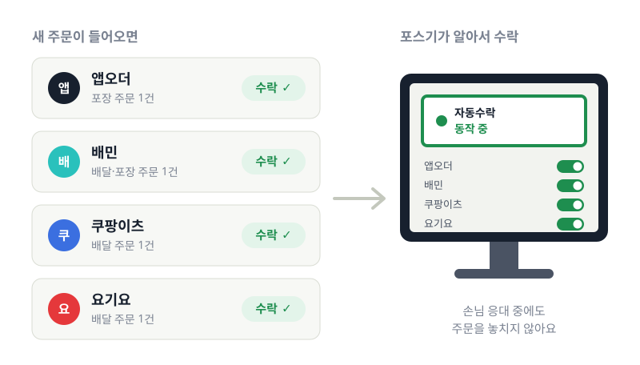
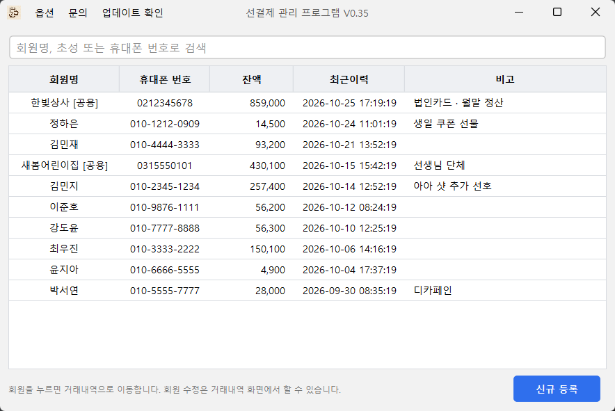
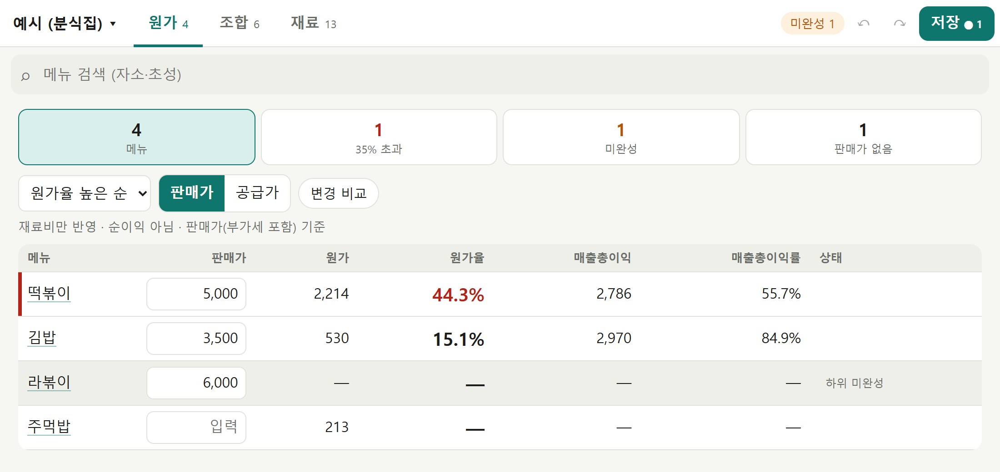

바쁜 매장,
손 하나 덜어 드릴게요.
컴포즈커피 점주가 매장에서 직접 쓰려고 만든 무료 프로그램입니다. 한 번 설치하면, 매일 반복하던 일을 대신 해 줍니다. 주변 점주님께도 편하게 공유해 주세요.
-
포스기에 설치
앱오더 자동수락
앱오더·배민·쿠팡·요기요 주문이 들어오면 알아서 수락합니다.
- 새로 만들어 메모리 사용량 1/10, 오래된 윈도우7 포스도 가볍게
- 배민·쿠팡·요기요 배달 자동수락 추가
- 주문 알림이 울릴 때마다 포스기로 뛰어갈 필요가 없어요
- 영업시간, 쿠팡 조리시간, 자동 포장 완료 개수까지 매장에 맞게

-
포스기에 설치
선결제 관리
종이 장부 대신, 단골과 회사 선결제 잔액을 한 화면에서 관리합니다.
- 회원 이름 초성이나 전화번호 일부로 바로 찾기
- ‘아아’, ‘ㅂㄴㄹㄹㄸ’, 한/영 잘못 친 ‘dkdk’도 메뉴를 찾아요
- 현금·카드 충전 시 추가금 자동 계산, 영수증·주문서 출력

가상의 회원 데이터로 찍은 화면이에요. -
웹사이트 · 설치 없음
마진체크
배민·쿠팡이츠·요기요·땡겨요 정산 엑셀을 올리면 실제로 얼마 남았는지 보여 줍니다.
- 매출, 수수료, 배달비, 광고비를 빼고 남은 순이익까지 한 번에
- 파일은 서버로 보내지 않아요. 내 브라우저 안에서만 계산
- 파일이 없어도 월 매출만 넣는 순이익 계산기로 요금제 비교

예시 데이터(가상의 카페 매장)로 찍은 화면이에요. -
웹사이트 · 설치 없음
메뉴 원가 계산기
재료 단가와 레시피를 넣으면 메뉴별 원가와 원가율을 계산합니다.
- 재료 → 조합(시럽·소스) → 메뉴 순으로 쌓아 한 번에 계산
- 재료값이 오르면 그 재료를 쓰는 메뉴 원가가 모두 바뀌어요
- 로그인 없이 저장하고, 링크 하나로 다른 기기에서 열기

예시 데이터(가상의 분식집)로 찍은 화면이에요. -
키오스크에 설치
키오스크 자동 영업시작
키오스크 전원만 켜면 비밀번호 입력과 영업시작 버튼을 대신 누릅니다.
- 오픈 준비 시간을 아껴요
- 영업시작이 끝나면 스스로 꺼져서 키오스크에 부담이 없어요